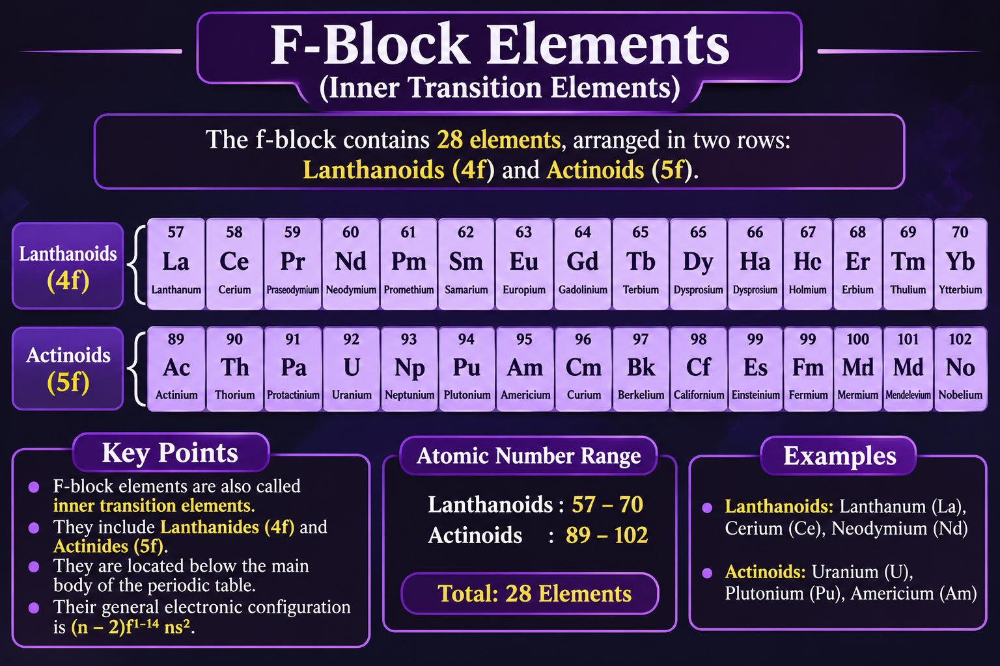

Periodic Table

About
Periodic table is a tabular arrangements of elements according to their atomic number
- > There are 118 known elements present in the periodic table.
- > Horizontal rows are called periods
and there are 7 periods in the periodic table.
- > Verticle columns are called groups
There are 18 groups in the periodic table
- > Elements are arranged according to increasing atomic number.
- > Elements in the same group generally have similar chemical properties.
Groups
Groups are the 18 verticle columns of the mordern periodic table.
Elements present in the same group have genrally similar chemical properties.
They usually have the same number of valence electrons.
1st group
First group is called alkali metals.
They are soft and highly reactive.
They have 1 electron in there outer shell.
It consists of 7 elements.Which are :
- Hydrogen(H)
- Lithium(Li)
- Sodium(Na)
- Potassium(K)
- Rubidium(Rb)
- Caesium(Cs)
- Francium(Fr)
2nd group
Second group is called alkaline earth metals.
These are reactive metal but these are less reactive than first group
They have 2 electrons in thee outer shell.
It consists of 6 elements.Which are :
- Beryllium (Be)
- Magnesium (Mg)
- Calcium (Ca)
- Strontium (Sr)
- Barium (Ba)
- Radium (Ra)
3rd group
These are transition metals.
These are commonly used in making strong and lightweight materials.
It consists of 4 elements.Which are :
- Scandium (Sc)
- Yttrium (Y)
- Lanthanum (La)
- Actinium (Ac)
4rth group
These are strong tansition metals
These are commonly used in making strong and lightweight materials.
It consists of 4 elements.Which are :
- Titanium (Ti)
- Zirconium (Zr)
- Hafnium (Hf)
- Rutherfordium (Rf)
5th group
These are strong and have high melting points.
These are used in making strong alloys.
It consists of 4 elements.Which are :
- Vandium (V)
- Niobium (Nb)
- Tantalum (Ta)
- Dubnium (Db)
6th group
These metals are hard and have high melting points.
These are used in making stainless steel and other alloys.
It consists of 4 elements.Which are :
- Chromium (Cr)
- Molybdenum (Mo)
- Tungesten (W)
- Seaborgium (Sg)
7th group
These are transition metals which show different oxidation states.
These are used in steel produvtion and batteries
It consists of 4 elements.Which are :
- Manganese (Mn)
- Technetium (Tc)
- Rhenium (Re)
- Bohrium (Bh)
8th group
These metals are important in various industries and manufacturing
They are good conductors and often used as catalysts.
It consists of 4 elements.Which are :
- Iron (Fe)
- Ruthenium (Ru)
- Osmium (Os)
- Hassium (Hs)
9th group
These are transition metals used in alloys and industrial applications.
Some are magnetic and useful in batteries.
It consists of 4 elements.which are :
- Cobalts(Co)
- Rhodium (Rh)
- Iridium (Ir)
- Meitnerium (Mt)
10th group
These metals are known for their strength and resistance to corrosion.
They are also used as catalysts
It consists of 4 elements.Which are :
- Nickel (Ni)
- Palladium (Pd)
- Platinum (Pt)
- Darmstadtium (Ds)
11th group
This group is known as coinage metals
These metals are excellent conductors of electricity.
They are commonly used in coins,jewelry and electrical wires
It consists of 4 elements.Which are
- Copper (Cu)
- Silver(Ag)
- Gold (Au)
- Roentgenium (Rg)
>
12th group
These metals are commonly used in coating and making alloys.
They genrally have full d-subshell
It consists of 4 elements.Which are :
- Zinc(Zn)
- Cadmium(Cd)
- Mercury(Hg)
- Copernicium(Cn)
13th group
These have three valence electrons
The group contain metals,metalloids and non-metals
They consists of 6 elements :
- Boron(B)
- Aluminum(Al)
- Gallium(Ga)
- Indium(In)
- Thallium(Tl)
- Nihonium(Nh)
14th group
These elements have 4 valence electrons
They are important in living organisms,electronics and industries
It consists of 6 elements.Which are :
- Carbon(C)
- Silicon(Si)
- Germanium(Ge)
- Tin(Sn)
- Lead(Pb)
- Flerovium(Fl)
15th group
These elements have 5 valence electrons
They include metals,metalloids and non-metals
It consists of 6 elements.Which are :
]
- Nitrogen(N)
- Phosphorus(P)
- Arsenic(As)
- Antimony(Sb)
- Bismuth(Bi)
- Moscovium(Mc)
16th group
These elements have 6 valence electrons
They play an important role in nature and living organisms
It consists of 6 elements.Which are:
- Oxygen(O)
- Sulfur(S)
- Selenium(Se)
- Tellurium(Te)
- Polonium(Po)
- Livermorium(Lv)
17th group
These are highly reactive non-metals(except for astatine and tennessine,have more complex classification)
They have 7 valence electrons
It consists of 6 elements.Which are :
- Fluorine(F)
- Chlorine(Cl)
- Bromine(Br)
- Iodine(I)
- Astatine(At)
- Tennessine(Ts)
18th Group
These are known as noble gases
These gases are genrally very unreactive because their outermost shells are complete.
They are used in lighting,balloons, and other applications
It consists of 7elements.Which are :
- Helium(He)
- Neon(Ne)
- Argon(Ar)
- Krypton(Kr)
- Xenon(Xe)
- Radon(Rn)
- Oganesson(Og)
Blocks
Blocks in the morden periodic table are the sections into which elements are divided
based on the subshellin which their last electron enters.
Their are four main blocks in the periodic table :
- S-block
- P-block
- D-block
- F-block
S-block

Elements in which the last electron enters in the s-subshell.It includes 1 and 2 group.
Elements that are included in the S-block are:
- Lithium(Li)
- Beryllium(Be)
- Sodium(Na)
- Magnesium(Mg)
- potassium(K)
- Calcium(Ca)
- Rubidium(Rb)
- Strontium(Sr)
- Cesium(Cs)
- Barium(Ba)
- Francium(Fr)
- Radium(Ra)
P-block

Elements in which the last electron enters the p-subshell.It includes Groups 13-18.
Elements which are included in the P-block are:
- Boron(B)
- Carbon(C)
- Nitrogen(N)
- Oxygen(O)
- Fluorine(F)
- Neon(Ne)
- Aluminum(Al)
- Silicon(Si)
- Phosphorus(P)
- Sulfur(S)
- Chlorine(Cl)
- Argon(Ar)
- Gallium(Ga)
- Germanium(Ge)
- Arsenic(As)
- Selenium(Se)
- Brmoine(Br)
- Krypton(Kr)
- Indium(In)
- Tin(Sn)
- Antimony(Sb)
- Tellurium(Te)
- Iodine(I)
- Xenon(Xe)
- Thallium(Tl)
- Lead(Pb)
- Bismuth(Bi)
- Polonium(Po)
- Astanine(At)
- Radon(Rn)
- Nihonium(Nh)
- Flerovium(Fl)
- Moscovium(Mc)
- Livermorium(Lv)
- Tennessine(Ts)
- Oganesson(Og)
D-block

Elements in which the last electrons enters the d-subshell.It includes group 3 to 12
Elements which are included in the d-subshell are :
- scandium(Sc)
- Titanium(Ti)
- Vanadium(V)
- Chromium(Cr)
- Manganese(Mn)
- Iron(Fe)
- Cobalt(Co)
- Nickel(Ni)
- Copper(Cu)
- Zinc(Zn)
- Yttrium(Y)
- Zicronium(Zr)
- Niobium(Nb)
- Molybdenum(Mo)
- Technetium(Tc)
- Ruthenium(Ru)
- Rhodium(Rh)
- Palladium(Pd)
- Silver(Ag)
- Cadmium(Cd)
- Lanthanum(La)
- Hafnium(Hf)
- Tantalum(Ta)
- Tungesten(W)
- Rhenium(Rh)
- Osmium(Os)
- Iridium(Ir)
- Platinum(Pt)
- Gold(Au)
- Mercuy(Hg)
- Actinium(Ac)
- Rutherfordium(Rf)
- Dubnium(Db)
- Seaborgium(Sg)
- Bohrium(Bh)
- Hassium(Hs)
- Meitnerium(Mt)
- Darmstadtium(Ds)
- Roentgenium(Rg)
- Copernicium(Cn)
F-Block

Elements in which the last electron enters the f-subshell.It includes the lanthanoids and actinoids also known as inner transition elements.
Elements which are included in the f-subshell are :
- Cerium(Ce)
- Praseodymium(Pr)
- Neodymium(Nd)
- Promethium(Pm)
- Samarium(Sm)
- Europium(Eu)
- Gadolinium(Gd)
- Terbium(Tb)
- Dysprosium(Dy)
- Holmium(Ho)
- Erbium(Er)
- Thulium(Tm)
- Ytterbium(Yb)
- Lutetium(Lu)
- Thorium(Th)
- Protactinium(Pa)
- Uranium(U)
- Neptunium(Np)
- Plutonium(Pu)
- Americium(Am)
- Curium(Cm)
- Berkelium(Bk)
- Californium(Cf)
- Einsteinium(Es)
- Fermium(Fm)
- Mendelevium(Md)
- Nobelium(Nb)
- Lawrencium(Lr)